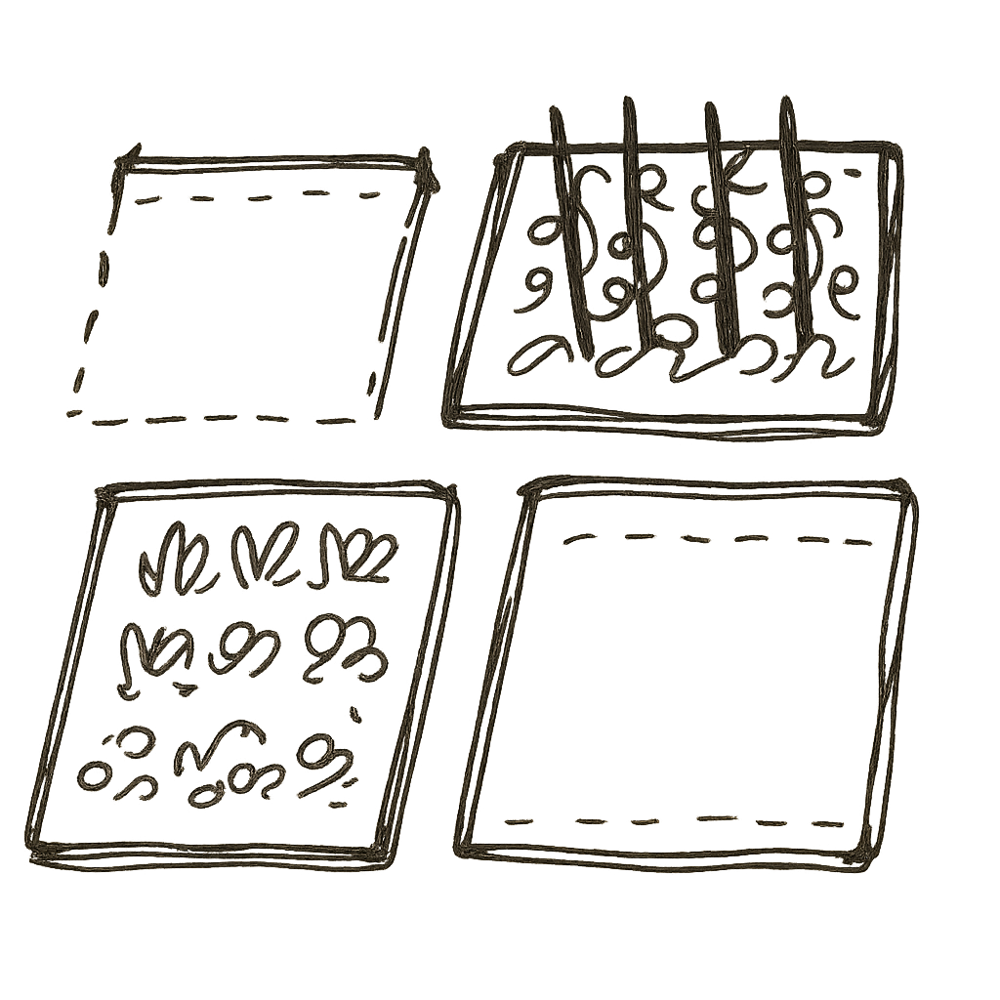
Fewer beds on the plan
Same sales, fewer beds. Less walking, less weeding, fewer problems to chase. The farm gets quieter.
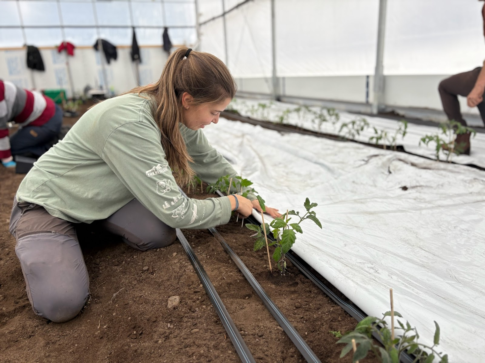
But life's richer with energy left for the people in it
A coaching program for market gardeners
More revenue out of the greenhouse, so you can cut field beds without cutting income. Same sales, fewer hours.
Join the waiting list →Drew & Allison Story
Allison's off-farm paycheck became optional
"We've been farming about a half an acre and then just a single 30 by 80 greenhouse with an attached propagation house slash wash pack."
2023
Drew grows 30-plus vegetables at Ghost House Farm. Allison worked off the farm. The farm wasn't yet enough to make a living from.

"Our first spring in the hoop house was awful. It was miserable."
2024
Drew automated the sunrise roll-ups, the mid-day irrigation, the cold-snap scrambles. His attention moved to the plant: variety selection, multiple leaders, pruning, water timing.
Tomatoes picked up. The market overflowed. Overshot projections and made a profit for the first time.

"My wife was able to quit her job and join me full-time on the farm."
Two incomes from the same production.
The bed is already paid for. The hours are spent. What grows on top is mostly margin.

Same sales, fewer beds. Less walking, less weeding, fewer problems to chase. The farm gets quieter.
The accounting gets done by someone who actually likes doing it. Your Sundays come back.
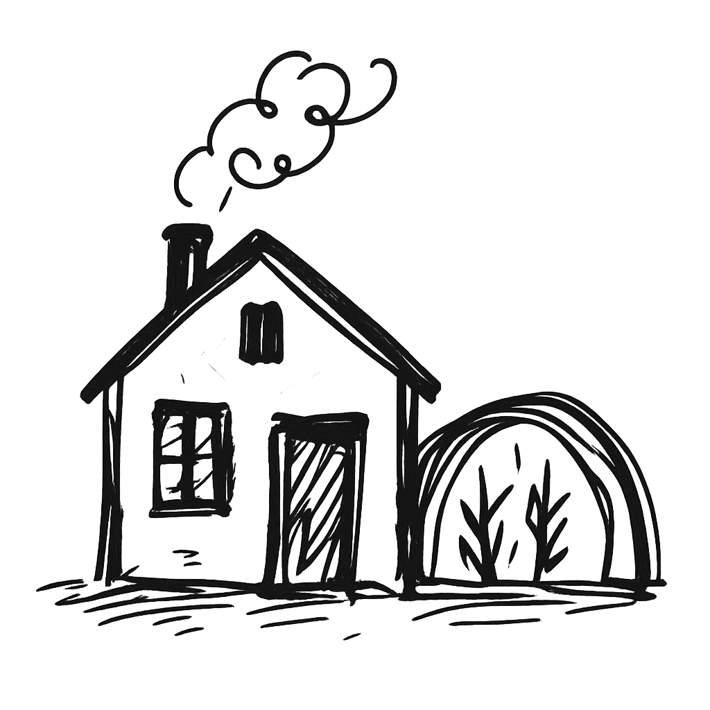
The off-farm paycheck, the partner's second job, the winter gig. Optional again.
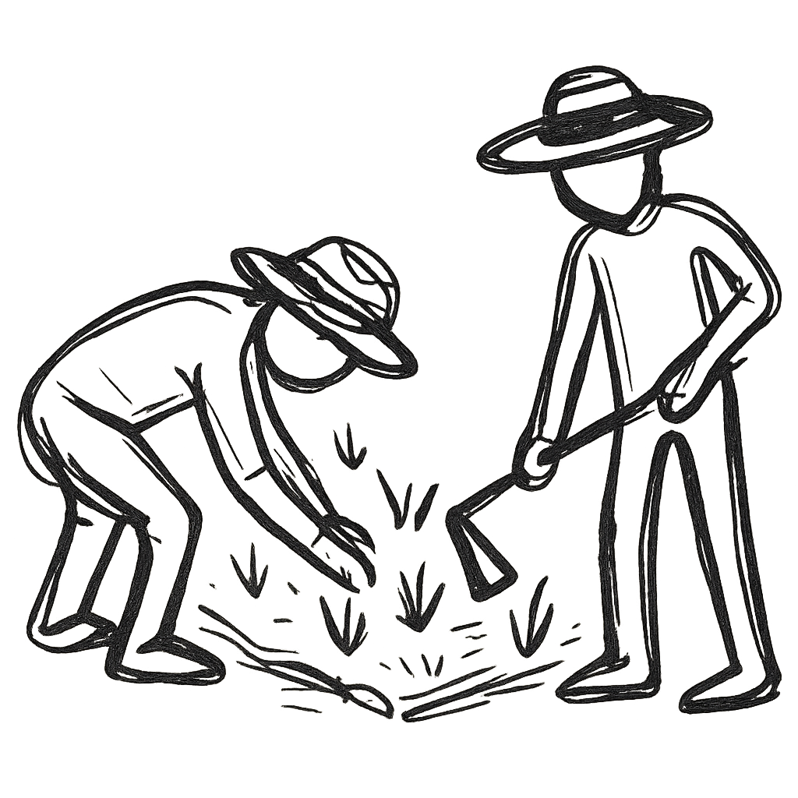
Better candidates walk in. The ones you hire stay longer. Experienced hands mean more done, faster, and less HR work.
Every one of these ends in the same place: time with the people you started farming for.
A farm has more work than hands. Focus where it earns the most back.
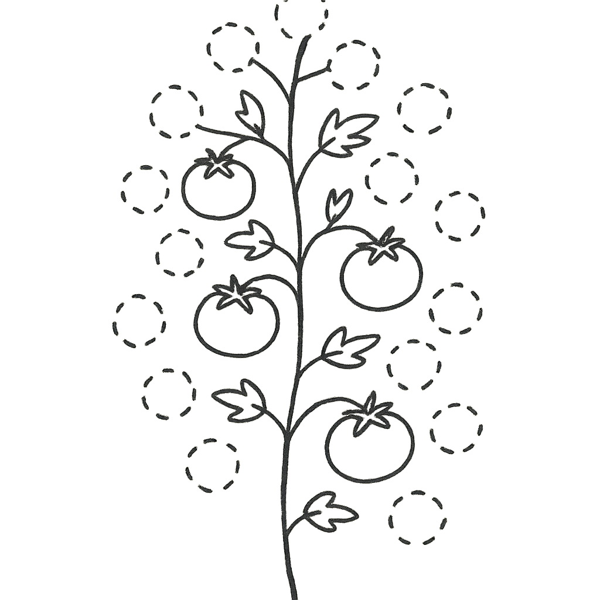
“We were at just around 1 lb/ft² with slicers in 2023, and we were one of the better tomato producers in the area. We're up to almost 5 lb/ft². We're trying to hit 6 this year.”
A well-run greenhouse tomato bed earns what 25 beds of beets, kale, or onions earn.
FQT Farm's numbers.
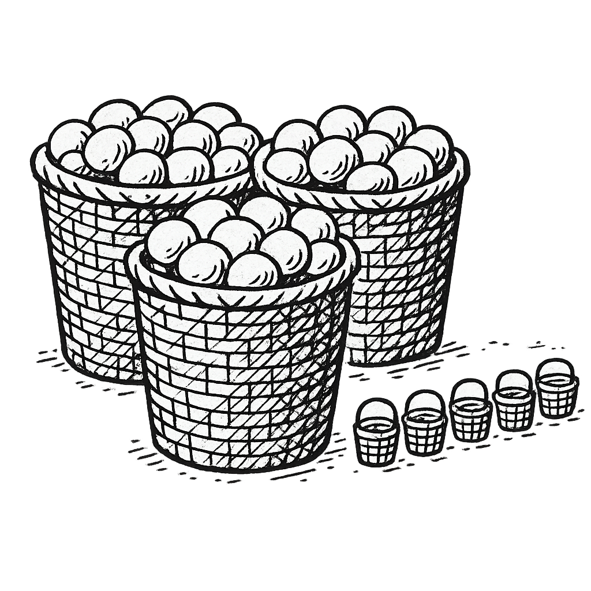
Tomatoes, cukes and lettuce carry 70% of Drew's farm revenue. The other 30 vegetables carry the rest.
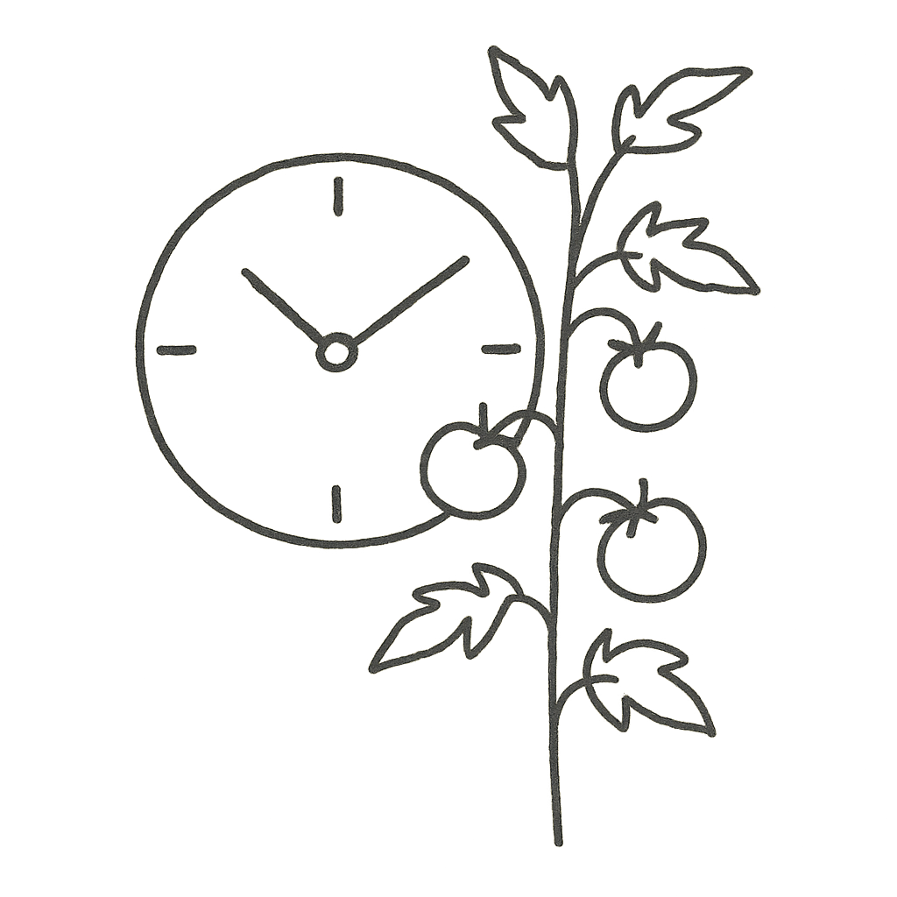
About 3 hours per bed per week, season-long average. More than any other crop you run.
On most diversified farms, no lever pays back like tomatoes.
Bonus
“Automation helps us continue to run the farm when we're not there. We get better quality and better yield with the tunnel totally automated without us than if we were there managing it. The tunnel will do a better job by itself.”
What lifts the tomatoes lifts everything else in the tunnel.
“We grew almost 3,000 pounds of cucumbers off of two 70 foot beds last year.”
Your most productive ground is yours again, to plant with something higher-margin.
They're not secret, and they're not new.
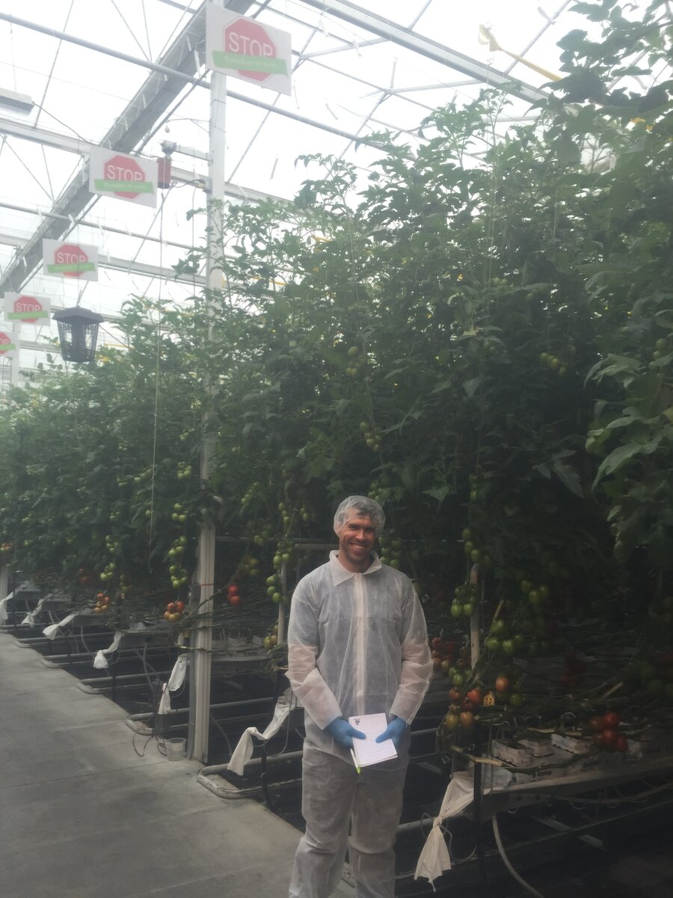
“The first year I applied what I'd learned on my own farm, my yields doubled.”
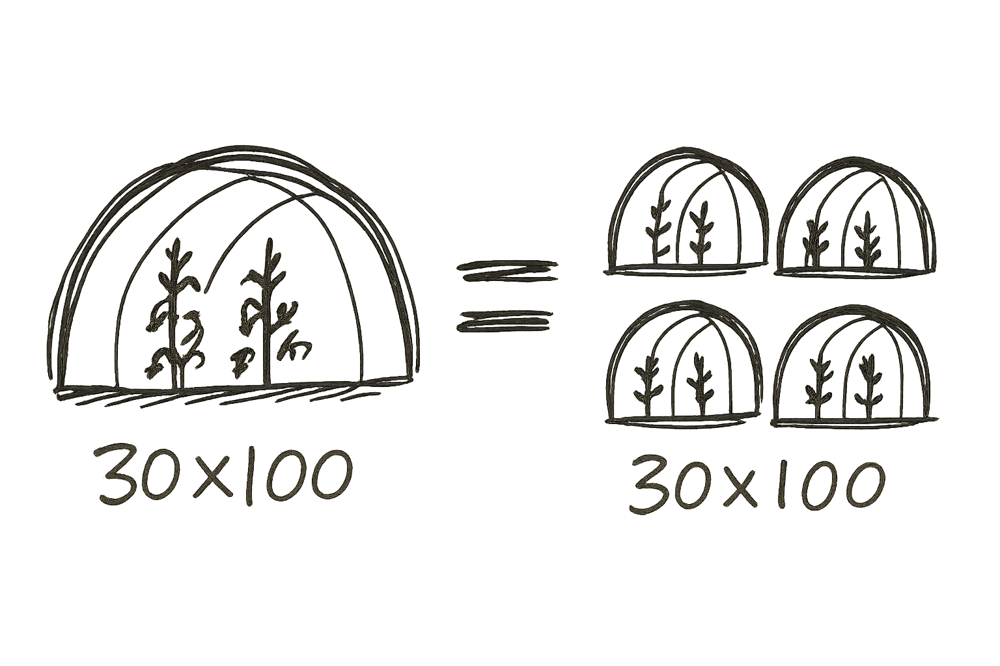
Quebec small growers working with consultants regularly hit 4× the average, same square footage.
Greenhouse tomato & cucumbers contribution
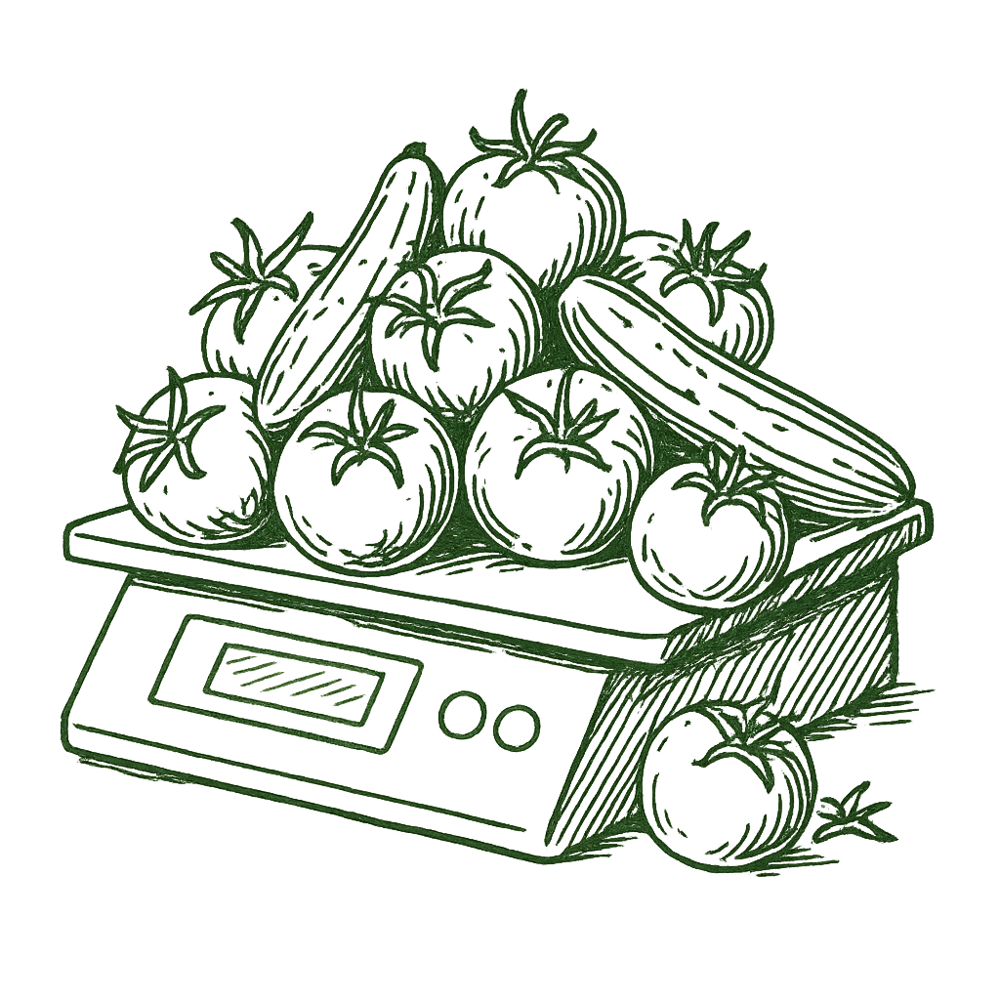
Drew, Ghost House Farm.
Andrew wrote the book. We made the most concise course we could with Orisha. For free. The information is out there.
But it's not enough. Folks send us questions all the time.
What's hard is the calls you have to make on the farm, week after week.
Which move to prioritize.
How to adapt a principle to your varieties, your tunnel, this month's weather.
Whether you're pruning enough, or pruning too much.
Am I doing it right?
No theory can answer those for you. Every greenhouse is specific, every week is new.
We work with growers on those calls. Not every season ends the same way.
Drew · Ghost House Farm
Worked with us across two seasons. His greenhouse revenue more than doubled.

Gordon · Ten Mothers Farm
Worked with us one season. One protocol doubled his fruit load in two weeks, then a heat wave took his fall, and we couldn't save it.
Every farm is different. Every climate is different. Our Playbook is as good as the seasons we've gathered. We can't promise miracles, and we don't know everything.
What we can do is build a place where we pool what we know, work on the obstacles you're facing, and learn together what tools make the next season easier. For you, and for every farmer who comes after.
You want to cut the workload without cutting your income. You'd rather lean on what others have figured out than do it alone.
Put your name on the list.
Join the waiting list →Each month, one goal for everyone in the program. Everyone works the same topic at the same time. That's where the group gets its momentum: questions pile up on the same thing from different farms, and the exchange gets specific fast.
What to look for in your own greenhouse, the specific moves to try. Phone-watchable between rows.
You bring the obstacles and uncertainties from your week: photos, numbers, questions. We work out your next action.
Recorded, so missing one is fine. You won't be put on the spot.
Everything happens inside the work you already planned. Between calls, a community forum: we answer once a week.
The first goal,
Build fruit load without exhausting the plants.
2 to 3 hrs a week
Mostly work on your own plants
If that slots into your week, put your name on the list.
Join the waiting list →A good fit
Not designed for you
Opens June 2026.
Special offer
For 2026 only. We'll see after that.
Subscribing to Growing for Market magazine is the cheapest way to join the program. $39/yr.
Join the waiting list →Three people show up on the calls. Different paths in, different angles on the same work.
Author. Growing for Market editor.
Andrew Mefferd ran a market garden before anything else. He went to work for Johnny's Selected Seeds and learned greenhouse techniques from the industrial growers who've built the craft over decades. He was still running his own farm at the time, tending tomatoes at 5am before heading in to Johnny's. The first year he applied what he was learning, his yields doubled.
He wrote The Greenhouse and Hoophouse Grower's Handbook to carry those techniques back to the market-garden community. Later he took over Growing for Market and set commercial farming aside. He's spent the years since editing articles and running the GFM Podcast, which has kept him in close conversation with the best of the small-grower world.
On calls, he brings the combined view: his own hands, plus the hundreds of farms he's edited and interviewed. When you describe something in your greenhouse, he's usually seen it before somewhere else.
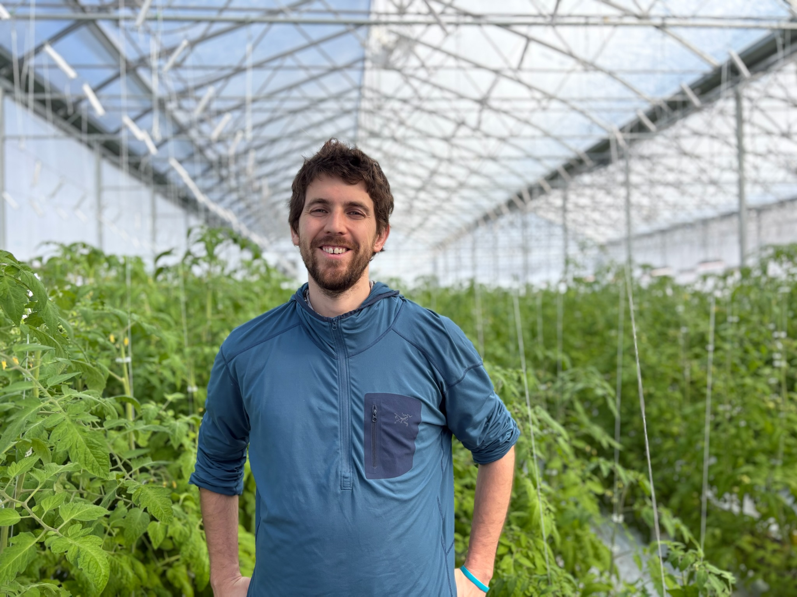
Founder, Orisha. Co-grower, Ferme Décembre.
Guillaume started Orisha with no background in agriculture. He spent the years since in conversation with hundreds of farmers, along with greenhouse consultants and university professors. Trying to understand how greenhouses can best serve on a small farm, so Orisha could be useful to small growers.
One challenge kept coming back. There's never enough time to get everything done. He made that Orisha's focus. From the failures and success stories he kept hearing, he built a 40hr farm playbook.
To test it out, he started Ferme Décembre with his partner last year. The target this year is $500k in revenue with 4 employees. Many things yet to figure out, but it seems to be working out so far.
On calls, he can help you spot what's holding your plants back, and where your week is leaking time.
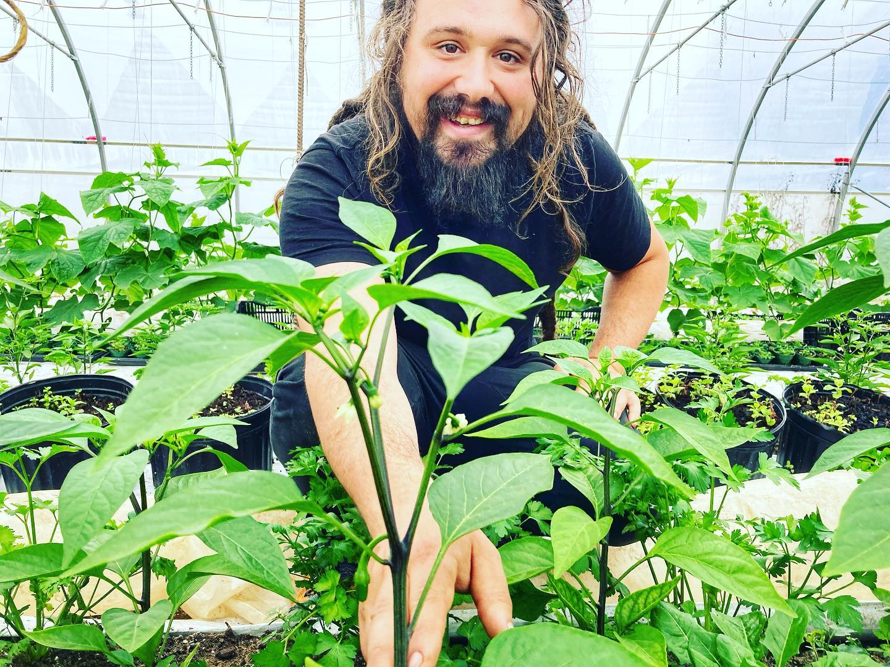
Grower, Jardin Inverness.
Antoine started a farm from scratch and sold it to take over a 2-acre farm he loved.
A few years in, between the financial and HR pressure, he told himself: "One more year like this, and I'll sell the farm."
Instead, he went hard on lean farming. He started the next season with half the staff. The farm finished the year with 15% more sales. Learning from Quebec greenhouse consultants, he pushed his tomato yields to 4× the small-grower average on the same square footage.
He now works with Orisha to share what he learned, while his employees run the farm.
On calls, he'll show you which lean moves held up when his farm was breaking, and which greenhouse techniques pushed his tomatoes to 4×.
Louis-Bernard keeps the community forum going between calls. The rest of us at Orisha turn what we learn into tools that make the work easier.